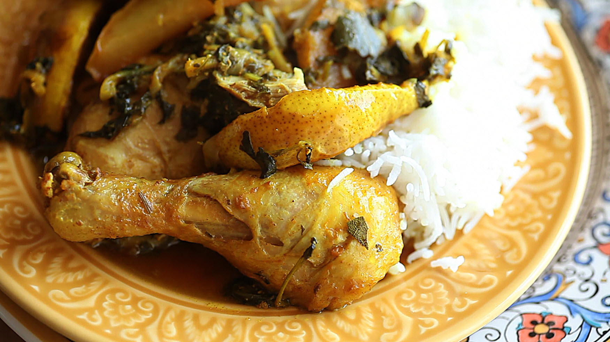

Odin recipes
Odin recipes
Moroccan chicken
Description
Chicken cooked in a tagine is always meltingly tender. Adding sweet, caramelized pears at the end makes this Moroccan dish irresistible.
- 7 tablespoons olive oil, divided
- 2 onions, peeled and sliced
- 1 whole chicken, cut into pieces
- 1 teaspoon ground turmeric
- 1 teaspoon ground cumin
- 1 teaspoon ground coriander
- 1 teaspoon salt
- 3 cinnamon sticks
- Preheat oven to 350 degrees F (175 degrees C).
- Heat 2 tablespoon olive oil in a skillet over medium heat and cook onions until softened and browned, 8 to 10 minutes. Transfer onions into a tagine. Layer chicken pieces on top of onions.
- Combine turmeric, cumin, ground coriander, and salt in a small bowl; mix well with remaining 5 tablespoons olive oil. Spread spice mixture onto the chicken pieces. Add cinnamon pieces, bay leaves, ginger, and cilantro. Pour in 1/2 cup of water and cover tagine with a lid.
- Bake in the preheated oven until chicken is no longer pink at the bone and the juices run clear, about 50 minutes. An instant-read thermometer inserted near the bone should read 165 degrees F (74 degrees C).
- Melt butter in a skillet over low heat while chicken is cooking. Add sliced pears and honey and cook, while stirring, until honey has caramelized.
- Remove tagine from the oven and stir in caramelized pears. Return to the oven and cook for an additional 10 minutes.